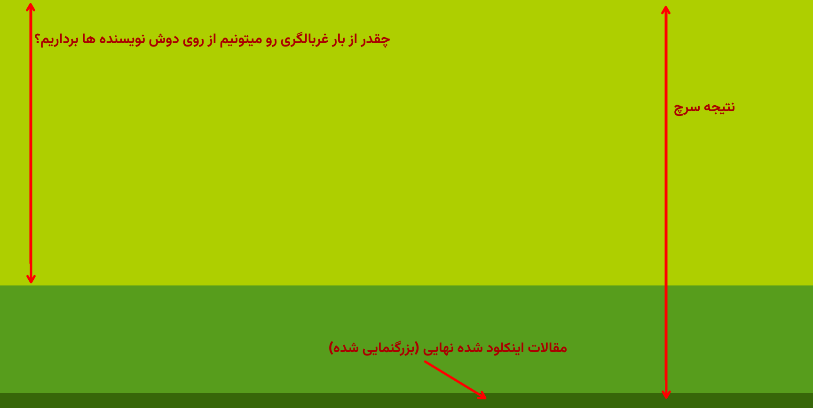
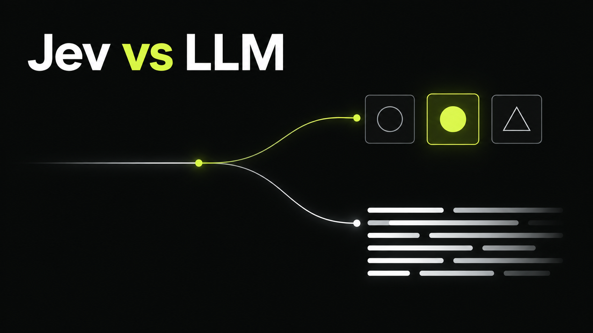
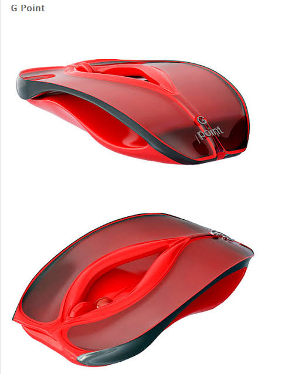
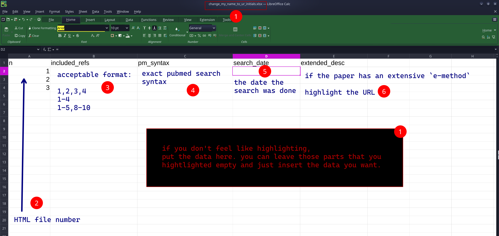
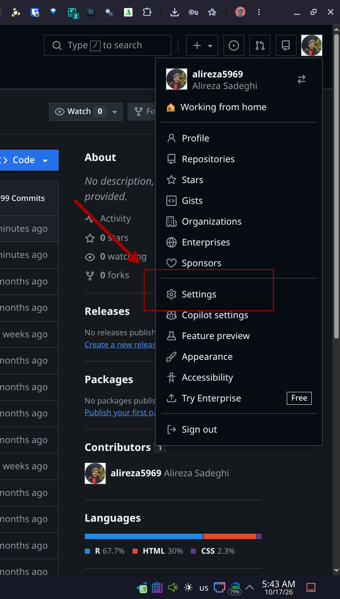
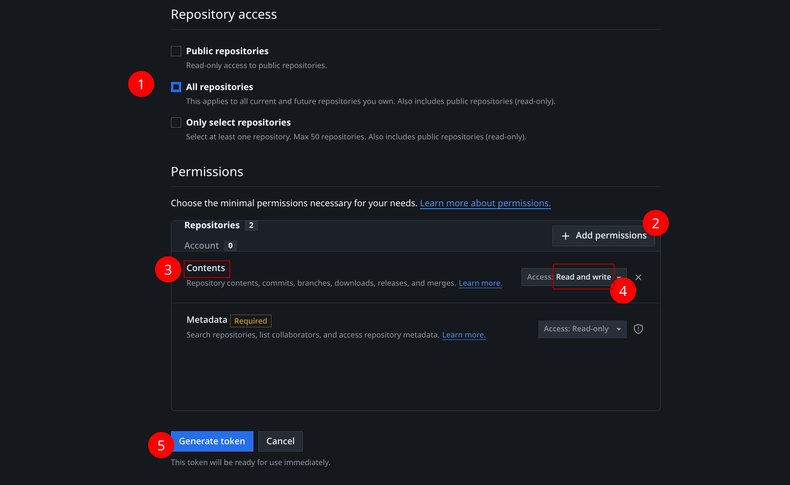
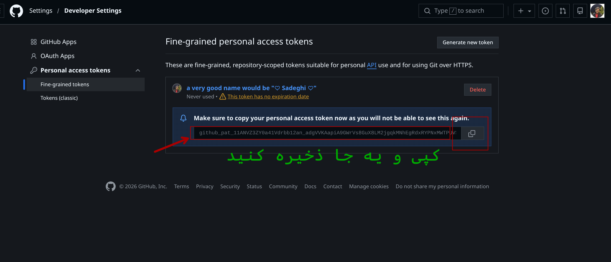
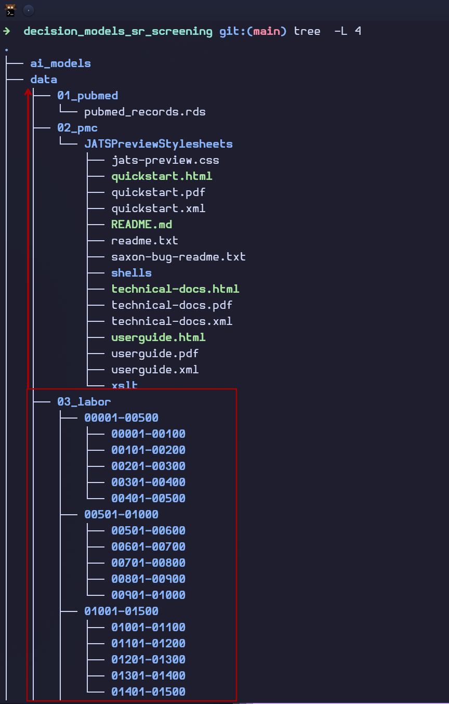
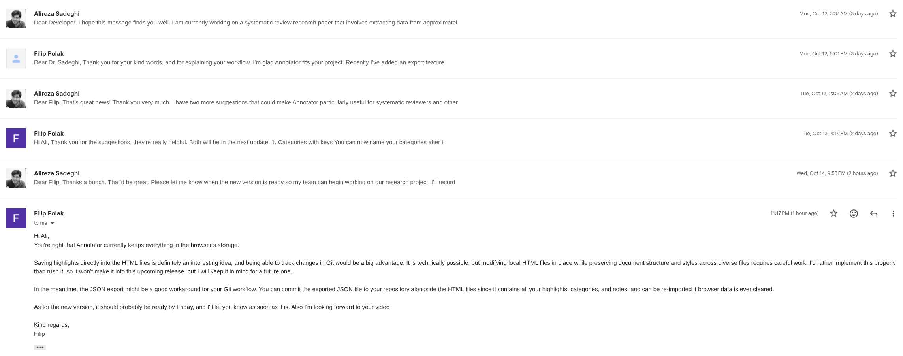

%%{init: {'theme': 'base', 'themeVariables': { 'fontSize': '20px'}}}%%
%%| fig-width: 9
flowchart LR
A[Published systematic review] --> B[You extract three things]
B --> C[PubMed search syntax]
B --> D[Number of raw PubMed records]
B --> E[Final included records]
C --> F[System One models screen the records<br/>using the review's own eligibility criteria]
D --> F
E --> G[Compare: what was removed vs. what should have stayed]
F --> G
Comparing the performance of System One AI models with human classifiers in systematic review primary screening
Collaborator kickoff
Sadegh
If you want to see this slide show in scrollable view, press “E” on your keyboard.
Why you are here
To find out how much work an AI screener can take off a reviewer’s desk before it throws away a paper that should have stayed.
- Systematic reviews start with thousands of PubMed records.
- Only a tiny handful survive to the final review.
- Humans read every single one of the rest. Takes weeks to months.

The idea in one picture
Finding the included papers among thousands of records is a rare-event problem. Same family as fraud detection, or screening for a rare disease.
- Most records are irrelevant (like the healthy population in rare disease case).
- A few records matter (the rare disease).
- Missing one of them is far worse than reading ten extra.
So the question is not “how accurate is the model?” It is:
> How many records can a model remove, before it removes a paper that is supposed to be in the final review?
Accuracy is worth shit in our case
Accuracy is a useless metric here. A model that rejects everything is 99% accurate and 100% useless. Say this out loud, it gets a laugh and it’s true.
How the study works
I programmatically retrieve PMC systematic reviews → You extract → I run the models → I do the analysis → I (probably) write the paper → We publish two thigs:
- A paper of our findings
- A big beautiful dataset with its own DOI
System One models
Decision models, not chatting models: e.g. Jev, Tev1, Nimble, Clef, Clef-flash, and friends.

- Cheap to maintain and run.
- One pass per request.
- Fast: up to 100 decisions per minute. If you think LLMs are fast, wait to see these!
A YouTube video about Jev in Farsi
I already have it downloaded on Telegram. Just holler and I’ll pass it along.
Why does time matter
About 90% of this project’s value comes from one thing: being the first published paper on this question in the world.
Nobody remembers the second team to do anything. Who landed the second on the moon? Literally just a few seconds after Neil Armstrong!
Punctuality is not a courtesy here.
Where to start before the start?
Your task: data labeler
The loop:
- Open an HTML file: an offline web page I rebuilt from a PMC article’s
XML. (turned out it’s illegal to download PMC articles programmatically) - Label the info:
PubMed search syntax(+date conducted, if available),number of raw PubMed records,final included records. - Repeat.
Easy but repetitive. I’ll show you in a video.
Mouse
You ABSOLUTELY need a mouse. This work cannot be done with a touchpad. If you don’t have a mouse already, just get your hands on one ASAP.

How does your side of things look like?

+ PROSPERO and published protocol
Some papers have >1 PROSPERO IDs. This could be a mistake. Make sure you highlight the one that is correct.
How does the final data look like
| systematic_review | record_num | decision_human | decision_machine_jev | decision_machine_tev | decision_machine_clef | decision_machine_clef_flash |
|---|---|---|---|---|---|---|
| 1 | 1 | |||||
| 1 | 2 | |||||
| 1 | 3 | |||||
| 1 | 4 | |||||
| 1 | 5 | |||||
| 1 | 6 | |||||
| 1 | 7 | |||||
| 1 | 8 | |||||
| 1 | 9 | |||||
| 1 | 10 | |||||
| 1 | 11 | |||||
| 1 | 12 | 1 | ||||
| 1 | 13 | |||||
| 1 | 14 | |||||
| 1 | 15 | |||||
| 1 | 16 | |||||
| 1 | 17 | |||||
| 1 | 18 | |||||
| 1 | 19 | |||||
| 1 | 20 | |||||
| 1 | 21 | |||||
| 1 | 22 | |||||
| 1 | 23 | |||||
| 1 | 24 | |||||
| 1 | 25 | |||||
| 1 | 26 | |||||
| 1 | 27 | |||||
| 1 | 28 | |||||
| 1 | 29 | |||||
| 1 | 30 | |||||
| 1 | 31 | |||||
| 1 | 32 | |||||
| 1 | 33 | |||||
| 1 | 34 | |||||
| 1 | 35 | |||||
| 1 | 36 | |||||
| 1 | 37 | |||||
| 1 | 38 | |||||
| 1 | 39 | |||||
| 1 | 40 | |||||
| 1 | 41 | |||||
| 1 | 42 | |||||
| 1 | 43 | |||||
| 1 | 44 | |||||
| 1 | 45 | |||||
| 1 | 46 | |||||
| 1 | 47 | |||||
| 1 | 48 | |||||
| 1 | 49 | |||||
| 1 | 50 | |||||
| 1 | 51 | |||||
| 1 | 52 | |||||
| 1 | 53 | |||||
| 1 | 54 | |||||
| 1 | 55 | |||||
| 1 | 56 | |||||
| 1 | 57 | |||||
| 1 | 58 | |||||
| 1 | 59 | |||||
| 1 | 60 | |||||
| 1 | 61 | |||||
| 1 | 62 | |||||
| 1 | 63 | |||||
| 1 | 64 | |||||
| 1 | 65 | |||||
| 1 | 66 | |||||
| 1 | 67 | |||||
| 1 | 68 | 1 | ||||
| 1 | 69 | |||||
| 1 | 70 | |||||
| 1 | 71 | |||||
| 1 | 72 | |||||
| 1 | 73 | |||||
| 1 | 74 | |||||
| 1 | 75 | |||||
| 1 | 76 | |||||
| 1 | 77 | |||||
| 1 | 78 | |||||
| 1 | 79 | |||||
| 1 | 80 | |||||
| 1 | 81 | |||||
| 1 | 82 | |||||
| 1 | 83 | |||||
| 1 | 84 | |||||
| 1 | 85 | |||||
| 1 | 86 | |||||
| 1 | 87 | |||||
| 1 | 88 | |||||
| 1 | 89 | |||||
| 1 | 90 | |||||
| 1 | 91 | |||||
| 1 | 92 | |||||
| 1 | 93 | |||||
| 1 | 94 | |||||
| 1 | 95 | |||||
| 1 | 96 | |||||
| 1 | 97 | |||||
| 1 | 98 | |||||
| 1 | 99 | |||||
| 1 | 100 | |||||
| 1 | 101 | |||||
| 1 | 102 | |||||
| 1 | 103 | |||||
| 1 | 104 | |||||
| 1 | 105 | |||||
| 1 | 106 | |||||
| 1 | 107 | |||||
| 1 | 108 | |||||
| 1 | 109 | |||||
| 1 | 110 | |||||
| 1 | 111 | |||||
| 1 | 112 | |||||
| 1 | 113 | |||||
| 1 | 114 | |||||
| 1 | 115 | |||||
| 1 | 116 | |||||
| 1 | 117 | |||||
| 1 | 118 | |||||
| 1 | 119 | |||||
| 1 | 120 | |||||
| 1 | 121 | |||||
| 1 | 122 | |||||
| 1 | 123 | |||||
| 1 | 124 | |||||
| 1 | 125 | |||||
| 1 | 126 | |||||
| 1 | 127 | |||||
| 1 | 128 | |||||
| 1 | 129 | |||||
| 1 | 130 | |||||
| 1 | 131 | |||||
| 1 | 132 | |||||
| 1 | 133 | |||||
| 1 | 134 | |||||
| 1 | 135 | |||||
| 1 | 136 | |||||
| 1 | 137 | |||||
| 1 | 138 | |||||
| 1 | 139 | |||||
| 1 | 140 | |||||
| 1 | 141 | |||||
| 1 | 142 | |||||
| 1 | 143 | |||||
| 1 | 144 | |||||
| 1 | 145 | |||||
| 1 | 146 | |||||
| 1 | 147 | 1 | ||||
| 1 | 148 | |||||
| 1 | 149 | |||||
| 1 | 150 | |||||
| 1 | 151 | |||||
| 1 | 152 | |||||
| 1 | 153 | |||||
| 1 | 154 | |||||
| 1 | 155 | |||||
| 1 | 156 | |||||
| 1 | 157 | |||||
| 1 | 158 | |||||
| 1 | 159 | |||||
| 1 | 160 | |||||
| 1 | 161 | |||||
| 1 | 162 | |||||
| 1 | 163 | |||||
| 1 | 164 | |||||
| 1 | 165 | |||||
| 1 | 166 | |||||
| 1 | 167 | |||||
| 1 | 168 | |||||
| 1 | 169 | |||||
| 1 | 170 | |||||
| 1 | 171 | |||||
| 1 | 172 | |||||
| 1 | 173 | |||||
| 1 | 174 | |||||
| 1 | 175 | |||||
| 1 | 176 | |||||
| 1 | 177 | |||||
| 1 | 178 | |||||
| 1 | 179 | |||||
| 1 | 180 | |||||
| 1 | 181 | |||||
| 1 | 182 | |||||
| 1 | 183 | |||||
| 1 | 184 | |||||
| 1 | 185 | |||||
| 1 | 186 | |||||
| 1 | 187 | |||||
| 1 | 188 | |||||
| 1 | 189 | |||||
| 1 | 190 | |||||
| 1 | 191 | |||||
| 1 | 192 | |||||
| 1 | 193 | |||||
| 1 | 194 | |||||
| 1 | 195 | |||||
| 1 | 196 | |||||
| 1 | 197 | |||||
| 1 | 198 | |||||
| 1 | 199 | |||||
| 1 | 200 | |||||
| 1 | 201 | |||||
| 1 | 202 | |||||
| 1 | 203 | |||||
| 1 | 204 | |||||
| 1 | 205 | |||||
| 1 | 206 | |||||
| 1 | 207 | |||||
| 1 | 208 | |||||
| 1 | 209 | |||||
| 1 | 210 | |||||
| 1 | 211 | |||||
| 1 | 212 | |||||
| 1 | 213 | |||||
| 1 | 214 | |||||
| 1 | 215 | |||||
| 1 | 216 | |||||
| 1 | 217 | |||||
| 1 | 218 | |||||
| 1 | 219 | |||||
| 1 | 220 | |||||
| 1 | 221 | |||||
| 1 | 222 | |||||
| 1 | 223 | |||||
| 1 | 224 | |||||
| 1 | 225 | |||||
| 1 | 226 | |||||
| 1 | 227 | |||||
| 1 | 228 | |||||
| 1 | 229 | |||||
| 1 | 230 | |||||
| 1 | 231 | |||||
| 1 | 232 | |||||
| 1 | 233 | |||||
| 1 | 234 | 1 | ||||
| 1 | 235 | |||||
| 1 | 236 | |||||
| 1 | 237 | |||||
| 1 | 238 | |||||
| 1 | 239 | |||||
| 1 | 240 | |||||
| 1 | 241 | |||||
| 1 | 242 | |||||
| 1 | 243 | |||||
| 1 | 244 | |||||
| 1 | 245 | |||||
| 1 | 246 | |||||
| 1 | 247 | |||||
| 1 | 248 | |||||
| 1 | 249 | |||||
| 1 | 250 | |||||
| 1 | 251 | |||||
| 1 | 252 | |||||
| 1 | 253 | |||||
| 1 | 254 | |||||
| 1 | 255 | |||||
| 1 | 256 | |||||
| 1 | 257 | |||||
| 1 | 258 | |||||
| 1 | 259 | |||||
| 1 | 260 | |||||
| 1 | 261 | |||||
| 1 | 262 | |||||
| 1 | 263 | |||||
| 1 | 264 | |||||
| 1 | 265 | |||||
| 1 | 266 | |||||
| 1 | 267 | |||||
| 1 | 268 | |||||
| 1 | 269 | |||||
| 1 | 270 | |||||
| 1 | 271 | |||||
| 1 | 272 | |||||
| 1 | 273 | |||||
| 1 | 274 | |||||
| 1 | 275 | |||||
| 1 | 276 | |||||
| 1 | 277 | |||||
| 1 | 278 | |||||
| 1 | 279 | |||||
| 1 | 280 | |||||
| 1 | 281 | |||||
| 1 | 282 | |||||
| 1 | 283 | |||||
| 1 | 284 | |||||
| 1 | 285 | |||||
| 1 | 286 | |||||
| 1 | 287 | |||||
| 1 | 288 | |||||
| 1 | 289 | |||||
| 1 | 290 | |||||
| 1 | 291 | |||||
| 1 | 292 | |||||
| 1 | 293 | |||||
| 1 | 294 | |||||
| 1 | 295 | |||||
| 1 | 296 | |||||
| 1 | 297 | |||||
| 1 | 298 | |||||
| 1 | 299 | |||||
| 1 | 300 | |||||
| 1 | 301 | |||||
| 1 | 302 | |||||
| 1 | 303 | |||||
| 1 | 304 | |||||
| 1 | 305 | |||||
| 1 | 306 | |||||
| 1 | 307 | |||||
| 1 | 308 | |||||
| 1 | 309 | |||||
| 1 | 310 | |||||
| 1 | 311 | |||||
| 1 | 312 | |||||
| 1 | 313 | |||||
| 1 | 314 | |||||
| 1 | 315 | |||||
| 1 | 316 | |||||
| 1 | 317 | |||||
| 1 | 318 | |||||
| 1 | 319 | |||||
| 1 | 320 | |||||
| 1 | 321 | |||||
| 1 | 322 | |||||
| 1 | 323 | |||||
| 1 | 324 | |||||
| 1 | 325 | |||||
| 1 | 326 | |||||
| 1 | 327 | |||||
| 1 | 328 | |||||
| 1 | 329 | |||||
| 1 | 330 | |||||
| 1 | 331 | |||||
| 1 | 332 | |||||
| 1 | 333 | |||||
| 1 | 334 | |||||
| 1 | 335 | |||||
| 1 | 336 | |||||
| 1 | 337 | |||||
| 1 | 338 | |||||
| 1 | 339 | |||||
| 1 | 340 | |||||
| 1 | 341 | |||||
| 1 | 342 | |||||
| 1 | 343 | |||||
| 1 | 344 | |||||
| 1 | 345 | |||||
| 1 | 346 | |||||
| 1 | 347 | |||||
| 1 | 348 | |||||
| 1 | 349 | |||||
| 1 | 350 | |||||
| 1 | 351 | |||||
| 1 | 352 | |||||
| 1 | 353 | |||||
| 1 | 354 | |||||
| 1 | 355 | |||||
| 1 | 356 | |||||
| 1 | 357 | |||||
| 1 | 358 | |||||
| 1 | 359 | |||||
| 1 | 360 | |||||
| 1 | 361 | |||||
| 1 | 362 | |||||
| 1 | 363 | |||||
| 1 | 364 | |||||
| 1 | 365 | |||||
| 1 | 366 | |||||
| 1 | 367 | |||||
| 1 | 368 | |||||
| 1 | 369 | |||||
| 1 | 370 | |||||
| 1 | 371 | |||||
| 1 | 372 | |||||
| 1 | 373 | |||||
| 1 | 374 | |||||
| 1 | 375 | |||||
| 1 | 376 | |||||
| 1 | 377 | |||||
| 1 | 378 | |||||
| 1 | 379 | |||||
| 1 | 380 | |||||
| 1 | 381 | |||||
| 1 | 382 | |||||
| 1 | 383 | |||||
| 1 | 384 | |||||
| 1 | 385 | |||||
| 1 | 386 | |||||
| 1 | 387 | |||||
| 1 | 388 | |||||
| 1 | 389 | |||||
| 1 | 390 | |||||
| 1 | 391 | |||||
| 1 | 392 | |||||
| 1 | 393 | |||||
| 1 | 394 | |||||
| 1 | 395 | |||||
| 1 | 396 | |||||
| 1 | 397 | |||||
| 1 | 398 | |||||
| 1 | 399 | |||||
| 1 | 400 | |||||
| 1 | 401 | |||||
| 1 | 402 | |||||
| 1 | 403 | |||||
| 1 | 404 | |||||
| 1 | 405 | |||||
| 1 | 406 | |||||
| 1 | 407 | |||||
| 1 | 408 | |||||
| 1 | 409 | |||||
| 1 | 410 | |||||
| 1 | 411 | |||||
| 1 | 412 | |||||
| 1 | 413 | |||||
| 1 | 414 | |||||
| 1 | 415 | |||||
| 1 | 416 | |||||
| 1 | 417 | |||||
| 1 | 418 | |||||
| 1 | 419 | |||||
| 1 | 420 | |||||
| 1 | 421 | |||||
| 1 | 422 | |||||
| 1 | 423 | |||||
| 1 | 424 | |||||
| 1 | 425 | |||||
| 1 | 426 | |||||
| 1 | 427 | |||||
| 1 | 428 | |||||
| 1 | 429 | |||||
| 1 | 430 | |||||
| 1 | 431 | |||||
| 1 | 432 | |||||
| 1 | 433 | |||||
| 1 | 434 | |||||
| 1 | 435 | |||||
| 1 | 436 | |||||
| 1 | 437 | |||||
| 1 | 438 | |||||
| 1 | 439 | |||||
| 1 | 440 | |||||
| 1 | 441 | |||||
| 1 | 442 | 1 | ||||
| 1 | 443 | |||||
| 1 | 444 | |||||
| 1 | 445 | |||||
| 1 | 446 | |||||
| 1 | 447 | |||||
| 1 | 448 | |||||
| 1 | 449 | |||||
| 1 | 450 | |||||
| 1 | 451 | |||||
| 1 | 452 | |||||
| 1 | 453 | |||||
| 1 | 454 | |||||
| 1 | 455 | |||||
| 1 | 456 | |||||
| 1 | 457 | |||||
| 1 | 458 | |||||
| 1 | 459 | |||||
| 1 | 460 | |||||
| 1 | 461 | |||||
| 1 | 462 | |||||
| 1 | 463 | |||||
| 1 | 464 | |||||
| 1 | 465 | |||||
| 1 | 466 | |||||
| 1 | 467 | |||||
| 1 | 468 | |||||
| 1 | 469 | |||||
| 1 | 470 | |||||
| 1 | 471 | |||||
| 1 | 472 | |||||
| 1 | 473 | |||||
| 1 | 474 | |||||
| 1 | 475 | |||||
| 1 | 476 | |||||
| 1 | 477 | |||||
| 1 | 478 | |||||
| 1 | 479 | |||||
| 1 | 480 | |||||
| 1 | 481 | |||||
| 1 | 482 | |||||
| 1 | 483 | |||||
| 1 | 484 | |||||
| 1 | 485 | |||||
| 1 | 486 | |||||
| 1 | 487 | |||||
| 1 | 488 | |||||
| 1 | 489 | |||||
| 1 | 490 | |||||
| 1 | 491 | |||||
| 1 | 492 | |||||
| 1 | 493 | |||||
| 1 | 494 | |||||
| 1 | 495 | |||||
| 1 | 496 | |||||
| 1 | 497 | |||||
| 1 | 498 | |||||
| 1 | 499 | |||||
| 1 | 500 | |||||
| 1 | 501 | |||||
| 1 | 502 | |||||
| 1 | 503 | |||||
| 1 | 504 | |||||
| 1 | 505 | |||||
| 1 | 506 | |||||
| 1 | 507 | |||||
| 1 | 508 | |||||
| 1 | 509 | |||||
| 1 | 510 | |||||
| 1 | 511 | |||||
| 1 | 512 | |||||
| 1 | 513 | |||||
| 1 | 514 | |||||
| 1 | 515 | |||||
| 1 | 516 | |||||
| 1 | 517 | |||||
| 1 | 518 | |||||
| 1 | 519 | |||||
| 1 | 520 | |||||
| 1 | 521 | |||||
| 1 | 522 | |||||
| 1 | 523 | |||||
| 1 | 524 | |||||
| 1 | 525 | |||||
| 1 | 526 | |||||
| 1 | 527 | |||||
| 1 | 528 | |||||
| 1 | 529 | |||||
| 1 | 530 | |||||
| 1 | 531 | |||||
| 1 | 532 | |||||
| 1 | 533 | |||||
| 1 | 534 | |||||
| 1 | 535 | |||||
| 1 | 536 | |||||
| 1 | 537 | |||||
| 1 | 538 | |||||
| 1 | 539 | |||||
| 1 | 540 | |||||
| 1 | 541 | |||||
| 1 | 542 | |||||
| 1 | 543 | |||||
| 1 | 544 | |||||
| 1 | 545 | |||||
| 1 | 546 | |||||
| 1 | 547 | |||||
| 1 | 548 | |||||
| 1 | 549 | |||||
| 1 | 550 | |||||
| 1 | 551 | |||||
| 1 | 552 | |||||
| 1 | 553 | |||||
| 1 | 554 | |||||
| 1 | 555 | |||||
| 1 | 556 | |||||
| 1 | 557 | |||||
| 1 | 558 | |||||
| 1 | 559 | |||||
| 1 | 560 | |||||
| 1 | 561 | |||||
| 1 | 562 | |||||
| 1 | 563 | |||||
| 1 | 564 | |||||
| 1 | 565 | |||||
| 1 | 566 | |||||
| 1 | 567 | |||||
| 1 | 568 | |||||
| 1 | 569 | |||||
| 1 | 570 | |||||
| 1 | 571 | |||||
| 1 | 572 | |||||
| 1 | 573 | |||||
| 1 | 574 | |||||
| 1 | 575 | |||||
| 1 | 576 | |||||
| 1 | 577 | |||||
| 1 | 578 | |||||
| 1 | 579 | |||||
| 1 | 580 | |||||
| 1 | 581 | |||||
| 1 | 582 | |||||
| 1 | 583 | |||||
| 1 | 584 | |||||
| 1 | 585 | |||||
| 1 | 586 | |||||
| 1 | 587 | |||||
| 1 | 588 | |||||
| 1 | 589 | |||||
| 1 | 590 | |||||
| 1 | 591 | |||||
| 1 | 592 | |||||
| 1 | 593 | |||||
| 1 | 594 | |||||
| 1 | 595 | |||||
| 1 | 596 | |||||
| 1 | 597 | |||||
| 1 | 598 | |||||
| 1 | 599 | |||||
| 1 | 600 | |||||
| 1 | 601 | |||||
| 1 | 602 | |||||
| 1 | 603 | |||||
| 1 | 604 | |||||
| 1 | 605 | |||||
| 1 | 606 | |||||
| 1 | 607 | |||||
| 1 | 608 | |||||
| 1 | 609 | |||||
| 1 | 610 | |||||
| 1 | 611 | |||||
| 1 | 612 | |||||
| 1 | 613 | |||||
| 1 | 614 | |||||
| 1 | 615 | |||||
| 1 | 616 | |||||
| 1 | 617 | |||||
| 1 | 618 | |||||
| 2 | 1 | |||||
| 2 | 2 | |||||
| 2 | 3 | |||||
| 2 | 4 | |||||
| 2 | 5 | |||||
| 2 | 6 | |||||
| 2 | 7 | |||||
| 2 | 8 | |||||
| 2 | 9 | |||||
| 2 | 10 | |||||
| 2 | 11 | |||||
| 2 | 12 | |||||
| 2 | 13 | |||||
| 2 | 14 | |||||
| 2 | 15 | |||||
| 2 | 16 | |||||
| 2 | 17 | |||||
| 2 | 18 | |||||
| 2 | 19 | |||||
| 2 | 20 | |||||
| 2 | 21 | |||||
| 2 | 22 | |||||
| 2 | 23 | |||||
| 2 | 24 | |||||
| 2 | 25 | |||||
| 2 | 26 | |||||
| 2 | 27 | |||||
| 2 | 28 | |||||
| 2 | 29 | |||||
| 2 | 30 | |||||
| 2 | 31 | |||||
| 2 | 32 | 1 | ||||
| 2 | 33 | |||||
| 2 | 34 | |||||
| 2 | 35 | |||||
| 2 | 36 | |||||
| 2 | 37 | |||||
| 2 | 38 | |||||
| 2 | 39 | |||||
| 2 | 40 | |||||
| 2 | 41 | |||||
| 2 | 42 | |||||
| 2 | 43 | |||||
| 2 | 44 | |||||
| 2 | 45 | |||||
| 2 | 46 | |||||
| 2 | 47 | |||||
| 2 | 48 | |||||
| 2 | 49 | |||||
| 2 | 50 | |||||
| 2 | 51 | |||||
| 2 | 52 | |||||
| 2 | 53 | |||||
| 2 | 54 | |||||
| 2 | 55 | |||||
| 2 | 56 | |||||
| 2 | 57 | |||||
| 2 | 58 | |||||
| 2 | 59 | |||||
| 2 | 60 | |||||
| 2 | 61 | |||||
| 2 | 62 | |||||
| 2 | 63 | |||||
| 2 | 64 | |||||
| 2 | 65 | |||||
| 2 | 66 | |||||
| 2 | 67 | |||||
| 2 | 68 | |||||
| 2 | 69 | |||||
| 2 | 70 | |||||
| 2 | 71 | |||||
| 2 | 72 | |||||
| 2 | 73 | |||||
| 2 | 74 | |||||
| 2 | 75 | |||||
| 2 | 76 | |||||
| 2 | 77 | |||||
| 2 | 78 | |||||
| 2 | 79 | |||||
| 2 | 80 | |||||
| 2 | 81 | |||||
| 2 | 82 | |||||
| 2 | 83 | |||||
| 2 | 84 | |||||
| 2 | 85 | |||||
| 2 | 86 | |||||
| 2 | 87 | |||||
| 2 | 88 | |||||
| 2 | 89 | |||||
| 2 | 90 | |||||
| 2 | 91 | |||||
| 2 | 92 | |||||
| 2 | 93 | |||||
| 2 | 94 | |||||
| 2 | 95 | |||||
| 2 | 96 | |||||
| 2 | 97 | |||||
| 2 | 98 | |||||
| 2 | 99 | |||||
| 2 | 100 | |||||
| 2 | 101 | |||||
| 2 | 102 | |||||
| 2 | 103 | |||||
| 2 | 104 | |||||
| 2 | 105 | |||||
| 2 | 106 | |||||
| 2 | 107 | |||||
| 2 | 108 | |||||
| 2 | 109 | |||||
| 2 | 110 | |||||
| 2 | 111 | |||||
| 2 | 112 | |||||
| 2 | 113 | |||||
| 2 | 114 | |||||
| 2 | 115 | |||||
| 2 | 116 | |||||
| 2 | 117 | |||||
| 2 | 118 | |||||
| 2 | 119 | |||||
| 2 | 120 | |||||
| 2 | 121 | |||||
| 2 | 122 | |||||
| 2 | 123 | |||||
| 2 | 124 | |||||
| 2 | 125 | |||||
| 2 | 126 | |||||
| 2 | 127 | |||||
| 2 | 128 | |||||
| 2 | 129 | |||||
| 2 | 130 | |||||
| 2 | 131 | |||||
| 2 | 132 | |||||
| 2 | 133 | |||||
| 2 | 134 | |||||
| 2 | 135 | |||||
| 2 | 136 | 1 | ||||
| 2 | 137 | |||||
| 2 | 138 | |||||
| 2 | 139 | |||||
| 2 | 140 | |||||
| 2 | 141 | |||||
| 2 | 142 | |||||
| 2 | 143 | |||||
| 2 | 144 | |||||
| 2 | 145 | |||||
| 2 | 146 | |||||
| 2 | 147 | |||||
| 2 | 148 | |||||
| 2 | 149 | |||||
| 2 | 150 | |||||
| 2 | 151 | |||||
| 2 | 152 | |||||
| 2 | 153 | |||||
| 2 | 154 | |||||
| 2 | 155 | |||||
| 2 | 156 | |||||
| 2 | 157 | |||||
| 2 | 158 | |||||
| 2 | 159 | |||||
| 2 | 160 | |||||
| 2 | 161 | |||||
| 2 | 162 | |||||
| 2 | 163 | |||||
| 2 | 164 | |||||
| 2 | 165 | |||||
| 2 | 166 | |||||
| 2 | 167 | |||||
| 2 | 168 | |||||
| 2 | 169 | |||||
| 2 | 170 | |||||
| 2 | 171 | |||||
| 2 | 172 | |||||
| 2 | 173 | |||||
| 2 | 174 | |||||
| 2 | 175 | |||||
| 2 | 176 | |||||
| 2 | 177 | |||||
| 2 | 178 | |||||
| 2 | 179 | |||||
| 2 | 180 | |||||
| 2 | 181 | |||||
| 2 | 182 | |||||
| 2 | 183 | |||||
| 2 | 184 | |||||
| 2 | 185 | |||||
| 2 | 186 | |||||
| 2 | 187 | |||||
| 2 | 188 | |||||
| 2 | 189 | |||||
| 2 | 190 | |||||
| 2 | 191 | |||||
| 2 | 192 | |||||
| 2 | 193 | |||||
| 2 | 194 | |||||
| 2 | 195 | |||||
| 2 | 196 | |||||
| 2 | 197 | |||||
| 2 | 198 | |||||
| 2 | 199 | |||||
| 2 | 200 | |||||
| 2 | 201 | |||||
| 2 | 202 | |||||
| 2 | 203 | |||||
| 2 | 204 | |||||
| 2 | 205 | |||||
| 2 | 206 | |||||
| 2 | 207 | |||||
| 2 | 208 | |||||
| 2 | 209 | |||||
| 2 | 210 | |||||
| 2 | 211 | |||||
| 2 | 212 | |||||
| 2 | 213 | |||||
| 2 | 214 | |||||
| 2 | 215 | |||||
| 2 | 216 | |||||
| 2 | 217 | |||||
| 2 | 218 | |||||
| 2 | 219 | |||||
| 2 | 220 | |||||
| 2 | 221 | |||||
| 2 | 222 | |||||
| 2 | 223 | |||||
| 2 | 224 | |||||
| 2 | 225 | |||||
| 2 | 226 | |||||
| 2 | 227 | |||||
| 2 | 228 | |||||
| 2 | 229 | |||||
| 2 | 230 | |||||
| 2 | 231 | |||||
| 2 | 232 | |||||
| 2 | 233 | |||||
| 2 | 234 | |||||
| 2 | 235 | |||||
| 2 | 236 | |||||
| 2 | 237 | |||||
| 2 | 238 | |||||
| 2 | 239 | |||||
| 2 | 240 | |||||
| 2 | 241 | |||||
| 2 | 242 | |||||
| 2 | 243 | |||||
| 2 | 244 | |||||
| 2 | 245 | |||||
| 2 | 246 | |||||
| 2 | 247 | |||||
| 2 | 248 | |||||
| 2 | 249 | |||||
| 2 | 250 | |||||
| 2 | 251 | |||||
| 2 | 252 | |||||
| 2 | 253 | |||||
| 2 | 254 | |||||
| 2 | 255 | |||||
| 2 | 256 | |||||
| 2 | 257 | |||||
| 2 | 258 | |||||
| 2 | 259 | |||||
| 2 | 260 | |||||
| 2 | 261 | |||||
| 2 | 262 | |||||
| 2 | 263 | |||||
| 2 | 264 | |||||
| 2 | 265 | |||||
| 2 | 266 | |||||
| 2 | 267 | |||||
| 2 | 268 | |||||
| 2 | 269 | |||||
| 2 | 270 | |||||
| 2 | 271 | |||||
| 2 | 272 | |||||
| 2 | 273 | |||||
| 2 | 274 | |||||
| 2 | 275 | |||||
| 2 | 276 | |||||
| 2 | 277 | |||||
| 2 | 278 | |||||
| 2 | 279 | |||||
| 2 | 280 | |||||
| 2 | 281 | |||||
| 2 | 282 | |||||
| 2 | 283 | |||||
| 2 | 284 | |||||
| 2 | 285 | |||||
| 2 | 286 | |||||
| 2 | 287 | |||||
| 2 | 288 | |||||
| 2 | 289 | |||||
| 2 | 290 | |||||
| 2 | 291 | |||||
| 2 | 292 | |||||
| 2 | 293 | |||||
| 2 | 294 | |||||
| 2 | 295 | |||||
| 2 | 296 | |||||
| 2 | 297 | |||||
| 2 | 298 | |||||
| 2 | 299 | |||||
| 2 | 300 | |||||
| 2 | 301 | |||||
| 2 | 302 | |||||
| 2 | 303 | |||||
| 2 | 304 | |||||
| 2 | 305 | |||||
| 2 | 306 | |||||
| 2 | 307 | |||||
| 2 | 308 | |||||
| 2 | 309 | |||||
| 2 | 310 | |||||
| 2 | 311 | |||||
| 2 | 312 | |||||
| 2 | 313 | |||||
| 2 | 314 | |||||
| 2 | 315 | |||||
| 2 | 316 | |||||
| 2 | 317 | |||||
| 2 | 318 | |||||
| 2 | 319 | |||||
| 2 | 320 | |||||
| 2 | 321 | |||||
| 2 | 322 | |||||
| 2 | 323 | |||||
| 2 | 324 | |||||
| 2 | 325 | |||||
| 2 | 326 | |||||
| 2 | 327 | |||||
| 2 | 328 | |||||
| 2 | 329 | |||||
| 2 | 330 | |||||
| 2 | 331 | |||||
| 2 | 332 | |||||
| 2 | 333 | |||||
| 2 | 334 | |||||
| 2 | 335 | |||||
| 2 | 336 | |||||
| 2 | 337 | |||||
| 2 | 338 | |||||
| 2 | 339 | |||||
| 2 | 340 | |||||
| 2 | 341 | |||||
| 2 | 342 | |||||
| 2 | 343 | |||||
| 2 | 344 | 1 | ||||
| 2 | 345 | |||||
| 2 | 346 | |||||
| 2 | 347 | |||||
| 2 | 348 | |||||
| 2 | 349 | |||||
| 2 | 350 | |||||
| 2 | 351 | |||||
| 2 | 352 | |||||
| 2 | 353 | |||||
| 2 | 354 | |||||
| 2 | 355 | |||||
| 2 | 356 | |||||
| 2 | 357 | |||||
| 2 | 358 | |||||
| 2 | 359 | |||||
| 2 | 360 | |||||
| 2 | 361 | |||||
| 2 | 362 | |||||
| 2 | 363 | |||||
| 2 | 364 | |||||
| 2 | 365 | |||||
| 2 | 366 | |||||
| 2 | 367 | |||||
| 2 | 368 | |||||
| 2 | 369 | |||||
| 2 | 370 | |||||
| 2 | 371 | |||||
| 2 | 372 | |||||
| 2 | 373 | |||||
| 2 | 374 | |||||
| 2 | 375 | |||||
| 2 | 376 | |||||
| 2 | 377 | |||||
| 2 | 378 | |||||
| 2 | 379 | |||||
| 2 | 380 | |||||
| 2 | 381 | |||||
| 2 | 382 | |||||
| 2 | 383 | |||||
| 2 | 384 | |||||
| 2 | 385 | |||||
| 2 | 386 | |||||
| 2 | 387 | |||||
| 2 | 388 | |||||
| 2 | 389 | |||||
| 2 | 390 | |||||
| 2 | 391 | |||||
| 2 | 392 | |||||
| 2 | 393 | |||||
| 2 | 394 | |||||
| 2 | 395 | |||||
| 2 | 396 | |||||
| 2 | 397 | |||||
| 2 | 398 | |||||
| 2 | 399 | |||||
| 2 | 400 | |||||
| 2 | 401 | |||||
| 2 | 402 | |||||
| 2 | 403 | |||||
| 2 | 404 | |||||
| 2 | 405 | |||||
| 2 | 406 | |||||
| 2 | 407 | |||||
| 2 | 408 | |||||
| 2 | 409 | |||||
| 2 | 410 | |||||
| 2 | 411 | |||||
| 2 | 412 | |||||
| 2 | 413 | |||||
| 2 | 414 | |||||
| 2 | 415 | |||||
| 2 | 416 | |||||
| 2 | 417 | |||||
| 2 | 418 | |||||
| 2 | 419 | |||||
| 2 | 420 | |||||
| 2 | 421 | |||||
| 2 | 422 | |||||
| 2 | 423 | |||||
| 2 | 424 | |||||
| 2 | 425 | |||||
| 2 | 426 | |||||
| 2 | 427 | |||||
| 2 | 428 | |||||
| 2 | 429 | |||||
| 2 | 430 | |||||
| 2 | 431 | |||||
| 2 | 432 | |||||
| 2 | 433 | |||||
| 2 | 434 | |||||
| 2 | 435 | |||||
| 2 | 436 | |||||
| 2 | 437 | |||||
| 2 | 438 | |||||
| 2 | 439 | |||||
| 2 | 440 | |||||
| 2 | 441 | |||||
| 2 | 442 | |||||
| 2 | 443 | |||||
| 2 | 444 | |||||
| 2 | 445 | |||||
| 2 | 446 | |||||
| 2 | 447 | |||||
| 2 | 448 | |||||
| 2 | 449 | |||||
| 2 | 450 | |||||
| 2 | 451 | |||||
| 2 | 452 | |||||
| 2 | 453 | |||||
| 2 | 454 | |||||
| 2 | 455 | |||||
| 2 | 456 | |||||
| 2 | 457 | |||||
| 2 | 458 | |||||
| 2 | 459 | |||||
| 2 | 460 | |||||
| 2 | 461 | |||||
| 2 | 462 | |||||
| 2 | 463 | |||||
| 2 | 464 | |||||
| 2 | 465 | |||||
| 2 | 466 | |||||
| 2 | 467 | |||||
| 2 | 468 | |||||
| 2 | 469 | |||||
| 2 | 470 | |||||
| 2 | 471 | |||||
| 2 | 472 | |||||
| 2 | 473 | |||||
| 2 | 474 | |||||
| 2 | 475 | |||||
| 2 | 476 | |||||
| 2 | 477 | |||||
| 2 | 478 | |||||
| 2 | 479 | |||||
| 2 | 480 | |||||
| 2 | 481 | |||||
| 2 | 482 | |||||
| 2 | 483 | |||||
| 2 | 484 | |||||
| 2 | 485 | |||||
| 2 | 486 | |||||
| 2 | 487 | |||||
| 2 | 488 | |||||
| 2 | 489 | |||||
| 2 | 490 | |||||
| 2 | 491 | |||||
| 2 | 492 | |||||
| 2 | 493 | |||||
| 2 | 494 | |||||
| 2 | 495 | |||||
| 2 | 496 | |||||
| 2 | 497 | |||||
| 2 | 498 | |||||
| 2 | 499 | |||||
| 2 | 500 | |||||
| 2 | 501 | |||||
| 2 | 502 | |||||
| 2 | 503 | |||||
| 2 | 504 | |||||
| 2 | 505 | |||||
| 2 | 506 | |||||
| 2 | 507 | |||||
| 2 | 508 | |||||
| 2 | 509 | |||||
| 2 | 510 | |||||
| 2 | 511 | |||||
| 2 | 512 | |||||
| 2 | 513 | |||||
| 2 | 514 | |||||
| 2 | 515 | |||||
| 2 | 516 | |||||
| 2 | 517 | |||||
| 2 | 518 | |||||
| 2 | 519 | |||||
| 2 | 520 | |||||
| 2 | 521 | |||||
| 2 | 522 | |||||
| 2 | 523 | |||||
| 2 | 524 | |||||
| 2 | 525 | |||||
| 2 | 526 | 1 | ||||
| 2 | 527 | |||||
| 2 | 528 | |||||
| 2 | 529 | |||||
| 2 | 530 | |||||
| 2 | 531 | |||||
| 2 | 532 | |||||
| 2 | 533 | |||||
| 2 | 534 | |||||
| 2 | 535 | |||||
| 2 | 536 | |||||
| 2 | 537 | |||||
| 2 | 538 | |||||
| 2 | 539 | |||||
| 2 | 540 | |||||
| 2 | 541 | |||||
| 2 | 542 | |||||
| 2 | 543 | |||||
| 2 | 544 | |||||
| 2 | 545 | |||||
| 2 | 546 | |||||
| 2 | 547 | |||||
| 2 | 548 | |||||
| 2 | 549 | |||||
| 2 | 550 | |||||
| 2 | 551 | |||||
| 2 | 552 | 1 | ||||
| 2 | 553 | |||||
| 2 | 554 | |||||
| 2 | 555 | |||||
| 2 | 556 | |||||
| 2 | 557 | |||||
| 2 | 558 | |||||
| 2 | 559 | |||||
| 2 | 560 | |||||
| 2 | 561 | |||||
| 2 | 562 | |||||
| 2 | 563 |
AI IS BAD!
No AI. At all.
You label everything yourself. No chatbot “just to double check the syntax”. No assistant to “quickly summarize the methods section”.
This study measures AI. A hallucinated number in our dataset becomes a hallucinated number in our paper.
Besides labeling
- Got a decent GPU? Lend me its computational power.
- No decent GPU? We all need to chip in toward renting one.
- Be responsive and active. Silence for two weeks is not a “work style”. I need to see your
git commits & your communication inside the group chat. - Send feedback. The design is not perfect. There’s room for improvement. For example, which keywords should be highlighted in the HTML files to make your job easier.
Authorship
- The collaborator who puts in the most work becomes co-first author. At least x2 of the rest.
- Everyone else who labels becomes an author (Dah!).
- I am the other co-first and the corresponding author.
- Probably two faculty members, from the US and Canada, will join.
You can call me anytime, day and night. I won’t call you anytime, unless you are a cool person.
Start working
Five steps, no genius required.
- Create a GitHub account.
- Send me your GitHub handle so I can add you to the repository.
- Install Git on your machine.
- Connect your local Git to GitHub.
- Install
Annotatoron both Firefox and Chrome. - Clone the project and start labeling.
what are Git and GitHub?
What are Git and GitHub?
- Git is a version-control and remote collaboration system. It lives on your computer.
- GitHub is where a Git project is stored online, so everyone can reach the same copy.

Repositories
A repository (repo) is a project folder whose entire history is remembered.

How repositories relate
You work on your copy. You send your changes up. You pull everyone else’s down. Nobody emails a file ever again. We don’t need to talk which about versions.
Why this is good for people with thesis scars
thesis_final.docx→thesis_final_v2.docx→thesis_final_REALLY_final_supervisor_edits.docx→thesis_final_v7_use_this_one.docx
What Git does about it:
- One project, one true version. No more guessing which file is the real one. There will be only one
thesis.docxfile. - Every change is remembered: who changed it, when, and why. You can go back to any earlier version.
- Many people can work at the same time without overwriting each other.
- No more attachments. Nobody mails you a “final.final.final.final.final.docx” file.
- Mistakes are reversible. The undo button now goes back months, not minutes.
Step 1 and 2: GitHub
- Sign up on GitHub.
- Send me your GitHub handle (mine is
*github.com/alireza5969*) so I can add you to the project. The project is now private and closed-sorced, but will be made open-sources upon submission. We will publish the code and data along with the paper for the sake of reproducibility.
Pick a handle you will not be embarrassed to see on a published paper’s acknowledgements. sexydoc69 & iLoveSadeghi is are good choices.
Step 3: install Git
Download Git for Windows (if you use MacOS or Linux, checkout Git’s website) and install it.
- Keep the default installation options.
- In particular, keep Git Credential Manager enabled if the installer offers it.
That is it. Click “Next” like you do for everything else.
Step 4: connect Git to GitHub
Tell Git who you are. Open a terminal (Git Bash is fine, but you can also do it with widnows’ cmd) and run:
Then check your email for the project invitation, open it, and click Accept invitation.
Step 5: clone the project (download it in simpler terms)
This is only done once:
You’ll encounter a view like this:
This means that GitHub is asking your Git to authenticate.
Enter your username/handle + Personal Access Token (PAT)
Where do I get a PAT?

Go to Settings in your GH account
Select Developer Settings
Go to ‘fine-grained tokens’ and follow the instructions in the image

Make sure you grant ‘read & write’ permission for content

Copy and save it somewhere
Directory structure

Step 6: Annotator
FUN ALERT.
You won’t need to extract data into spreadsheet!
I’ve been working with a Polish JS developer to prepare an Annotator for you.

All you need to do is to highlight the info. You’ll get to export them all at once later.
Install Annotator
- You MUST have both Chrome and Firefox browsers installed on you machine before Annotator. Then:
- For Chrome, install
Annotatorfrom here - For Firefox, install
Annotatorform here - Preferable, create a new profile on your browsers. I’ll show you how.
- I’ve made friends with the developer of
Annotator. So, don’t hesitate if you have any feedback.
Start labeling
- Open an
.htmlfile. - Follow the conventions set by me and start highlighting the data: PubMed syntax + included refs. (feedbacks about the conventions are welcomed)
- Document the reasons you exclude a paper inside the
notes/directory, e.g. “search syntax is in figures”. - Export your labelings into a
jsonfile and put it inside thelabeling_jsons/directory with your initials as the name, e.g. mine would beas.json.
- Every day, push your progress to the remote after each day of labeling:
Danger.
Do not erase your browser history in the meanwhile! All your extract would be gone!
Start labeling
- Every day, push your progress to the remote after each day of labeling:
Daily means daily. We need to get this piece to publication ASAP.
Feedback: Keyword Colors
You can highlight or changed the color of keywords as well so they get easier to detect on first sight. You can choose from:
aliceblue, antiquewhite, aqua, aquamarine, azure, beige, bisque, black, blanchedalmond, blue, blueviolet, brown, burlywood, cadetblue, chartreuse, chocolate, coral, cornflowerblue, cornsilk, crimson, cyan, darkblue, darkcyan, darkgoldenrod, darkgray, darkgreen, darkgrey, darkkhaki, darkmagenta, darkolivegreen, darkorange, darkorchid, darkred, darksalmon, darkseagreen, darkslateblue, darkslategray, darkslategrey, darkturquoise, darkviolet, deeppink, deepskyblue, dimgray, dimgrey, dodgerblue, firebrick, floralwhite, forestgreen, fuchsia, gainsboro, ghostwhite, gold, goldenrod, gray, green, greenyellow, grey, honeydew, hotpink, indianred, indigo, ivory, khaki, lavender, lavenderblush, lawngreen, lemonchiffon, lightblue, lightcoral, lightcyan, lightgoldenrodyellow, lightgray, lightgreen, lightgrey, lightpink, lightsalmon, lightseagreen, lightskyblue, lightslategray, lightslategrey, lightsteelblue, lightyellow, lime, limegreen, linen, magenta, maroon, mediumaquamarine, mediumblue, mediumorchid, mediumpurple, mediumseagreen, mediumslateblue, mediumspringgreen, mediumturquoise, mediumvioletred, midnightblue, mintcream, mistyrose, moccasin, navajowhite, navy, oldlace, olive, olivedrab, orange, orangered, orchid, palegoldenrod, palegreen, paleturquoise, palevioletred, papayawhip, peachpuff, peru, pink, plum, powderblue, purple, rebeccapurple, red, rosybrown, royalblue, saddlebrown, salmon, sandybrown, seagreen, seashell, sienna, silver, skyblue, slateblue, slategray, slategrey, snow, springgreen, steelblue, tan, teal, thistle, tomato, turquoise, violet, wheat, white, whitesmoke, yellow, yellowgreen, transparent, currentcolor
If you want to change the highlighting color without my help, do the following. This will change the colors for all the collaborators.
Change the
kw_colors.csvfile insideenv/to your liking.Copy and paste this into your
CMDwhile you are inside the project:Now, you wait for ~1 hour so GitHub’s servers change the colors.
Again, run
git pullto download the changes. It should show that something (in this case, the coloring) has changed.
Do not abuse
Don’t just use it every time you add/change a keyword/color. This will massively increase the size pf the repo. Ask other colleagues and let the changes accumulate; then, do git add ., git commit, git pull, and git push.
If you need to open the article’s PMC web page (for example, to get a Supplementary Material):
Let’s have a look at some samples
Due
start by ~ 5k papers each + you’ll have 1 month to finish.
It’s much easier than data extraction. So, the expectation is not too far.
Delay = removed from the project
YOU HAVE A QUESTION?
CALL
ME.
ME.
ANYTIME.
Phone: +989164219471
Telegram: @as5969Collaborator tutorial